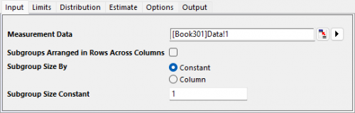

工程の概要のチュートリアル
Tutorial-PO
始める前の注意
- ここからサンプルプロジェクトファイルをダウンロードし、Originで開きます。
 | 詳細情報:
|
正規工程の概要
背景
ある品質管理技術者が、機械のカプセル充填プロセスを評価したいと考えています。カプセル重量の規格限界は215±17mgです。
8時半から12時まで10分ごとに8個のカプセル重量を収集しています。カプセルの重量が要件をどの程度満たしているかを評価する場合を考えてみます。
Originでの操作
- フォルダ1.Normalを開き、ワークブックCapsule Weightをアクティブにします。
- B～I列を選択します。Originのウィンドウ左側にあるアプリギャラリーウィンドウを開き、Statistical Process Controlアイコン
 をクリックします。
をクリックします。
- 工程の概要タブを選択し、正規工程の概要を選択します。

- 開いたダイアログの入力タブで、列B~Iが測定データとして自動的に選択されます。複数列をまたいでサブグループが行に配置にチェックを付けます。

- 限界タブで、下限規格を198にし、上限規格を232にして、 目標を215に設定します。

- OKボタンをクリックします。レポート表付きのグラフが作成されます。
結果の解釈
Xbar管理図と特殊原因の検定であるTest1の結論から、ポイント5がUCL外にあることがわかります。
工程能力ヒストグラムからは、観測値がLSLおよびUSL内に収まっていないことがわかります。
また、Cpkは0.837で1未満です。
これにより、この工程は要件を満たさないと結論付けられます。

サブグループ間/内の概要
背景
あるエンジニアがステンレス鋼板の製造プロセスを評価したいと考えています。
彼は、連続した20枚の鋼板から４つの厚さの測定値を収集します。 厚さはほぼ3±0.1mmです。
Originでの操作
- フォルダ2.Between-Withinを開き、ワークブックのスチールシートをアクティブにします。
- Originのウィンドウ左側にあるアプリギャラリーウィンドウを開き、Statistical Process Controlアイコンをクリックします。
- 工程の概要タブを選択し、サブグループ間/内の概要を選択します。
- 開いたダイアログの入力タブで、列Aを測定データとして選択します。サブグループのサイズを列にし、サブグループのサイズ列を列Bに設定します。

- 限界タブで、下限規格を29にし、上限規格を31にして、 目標を30に設定します。

- OKボタンをクリックします。レポート表付きのグラフが作成されます。
結果の解釈
個別管理図、移動範囲管理図、および範囲管理図では、管理限界を超える点がなく、プロセスが安定していることを示しています。
データポイントは確率プロットの基準線に近く、データは正規分布であることがわかります。
工程能力ヒストグラムでは、すべての観測値が規格限界内であることがわかります。
CPは1.188であり、これは仕様の範囲がプロセスの6σ範囲の1.19倍であることを示しています。CP(1.188)とCpk(1.093)は互いにあまり近くなく、プロセスの中心が少しずれていることを示しています。全体的な能力については、PP(1.046), Ppk(0.962)およびCPM (1.02)は、はすべて1.33未満であり、これは一般的に許容される工程能力の最小値とされています。
このプロセスは良好であると結論付けることができますが、依然として能力の向上が可能です。

非正規工程の概要
背景
重さの値のデータセットがあり、それはワイブル分布に従っています。そのデータが1を超えないことを望んでいます。
Originでの操作
- フォルダ3.Nonnormalを開きます。ワークブックWeibullをアクティブにします。
- Originのウィンドウ左側にあるアプリギャラリーウィンドウを開き、Statistical Process Controlアイコンをクリックします。
- 工程の概要タブを選択し、非正規工程の概要を選択します。
- 開いたダイアログの入力タブで、列Aが測定データとして自動的に選択されます。サブグループのサイズを定数にし、サブグループのサイズの定数を1に設定します。
-

- 限界タブで、上限規格を1設定し、その他のすべてのテキストボックスを空のままにします。

- 分布タブで、分布を自動に設定します。これでAD値に応じて最適な分布を自動的に検出してレポートします。

- OKボタンをクリックします。レポート表付きのグラフが作成されます。
結果の解釈
確率プロットは、データセットが3パラメータのワイブル分布に従っていることを示しています。
個別管理図および移動範囲管理図では、管理限界を超える点はなく、プロセスが安定していることが示されています。
工程能力ヒストグラムでは、すべての観測値が上方規格限界を下回っています。
したがって、このプロセスは要求を満たしています。